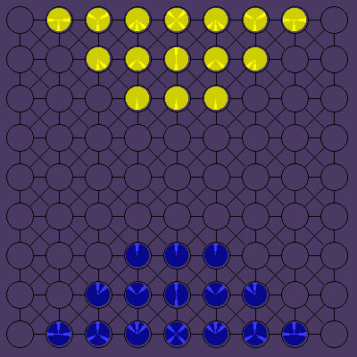
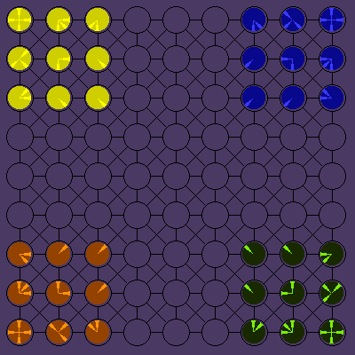
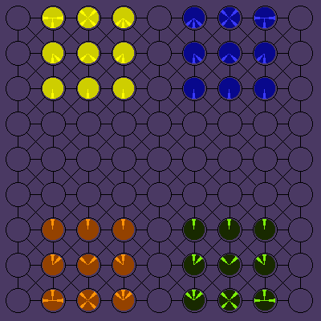

OBJECT OF THE GAMEEach player skillfully maneuvers the playing pieces along the paths of the playing board in an effort to capture the opponent's Lance, Probes, Shields or Commander. Since pieces can only move along paths in line with the indicators which radiate from their centers, the strategy for capturing - or avoiding capture - lies in knowing when to move in a different direction. The first player to capture the opponent's Commander or destroy all of the opponent's Lances, Probes and Shields, wins! PLAYERSThere are either 2 or 4 players in the original game. PIECESAre they starships, or futuristic hovertanks and drone fighters? It is up to you. The smooth plastic pieces are somewhere further in the future than either chess or checkers, but where is up to your imagination. [Ploy playing pieces] are circular, domed objects like covered checkers. The pieces are placed on circular spaces on the board which are connected by lines. Each piece has one to four direction indicators which radiate from the center to the edge of the piece. These indicate - what type of piece it is, how far that piece can move per turn, and in what direction. If the piece lands upon an enemy piece, it must stop there and the enemy piece is destroyed. The [3M Ploy Game] came with only four choices of playing pieces: coral, green, orange, and yellow. The coral and green sets each included 1 commander, 6 lances, 5 probes, and 3 shields. Not all pieces are used in the various games. During the game, pieces must always be positioned so that their indicators line up with the lines on the board. Each piece may only move along the lines in the same direction as its indicators. Indicators indicate forward movement only - they cannot be used for reverse movement unless an indicator in that direction exists on that piece.
MOVINGPlayers move alternately by making either a motion move or a direction move. A motion move consists of moving one piece over unoccupied spaces horizontally, vertically, or diagonally in the direction of one of its indicators. To capture, a piece must move onto a space occupied by an opponent's piece; the captured piece is removed from the board. A direction move consists of rotating (turning) one piece so that its indicators point in a different direction. Example: Probe rotates so it can move in a different direction on another turn. *** On the same turn, a Shield (unlike other pieces) is allowed to make a direction move following its motion move. ENDING THE GAMEGame ends when a player captures either his opponent's Commander or all of his Lances, Probes, and Shields. VERSIONSThere are three versions of game in basic Ploy: the Two-Player Game, the Four Player Free-For-All, and the Four Player Partnership Game. TWO PLAYER GAMEPlayers use only two color sets of pieces.
 FOUR PLAYER FREE-FOR-ALL GAMEIn the free-for-all game, each player has 1 Commander, 2 Lances, 3 Probes, and 3 Shields. When a player's Commander is captured, he is out of the game; the remainder of his pieces may be used by the capturing player on subsequent turns. (If a player captures the Commander of a player who has been using a previously-defeated player's pieces, the capturing player takes control of any remaining pieces of both defeated players.) When all of a player's Lance, Probes, and Shields have been captured, the Commander is removed from the board and that player is out of the game. When all opponents have been defeated, the remaining player is the winner.
 FOUR PLAYER PARTNERSHIP GAMEIn the four-player partnership game, each player has 1 Commander, 2 Lances, 3 Probes, and 3 Shields. Partners share one side of the board (top or bottom) and move their pieces in individual turns. During his turn, each player makes either a motion move or a direction move in the usual manner. Game ends when one partnership captures both Commanders or all Lances, Probes and Shields or one opponent's Commander and all of his partner's Lances, Probes, and Shields. A Player may continue to play as long as he has pieces on the board if his partner has a Commander and at least one other piece on the board. A player whose pieces have all been captured is out of the game. His partner continues to play, alternating turns with opponents. (Thus, if Player A were eliminated, play would continue with Player B, then Player C, Player D, Player B, Player C, etc.).
 HISTORY
COMING
|